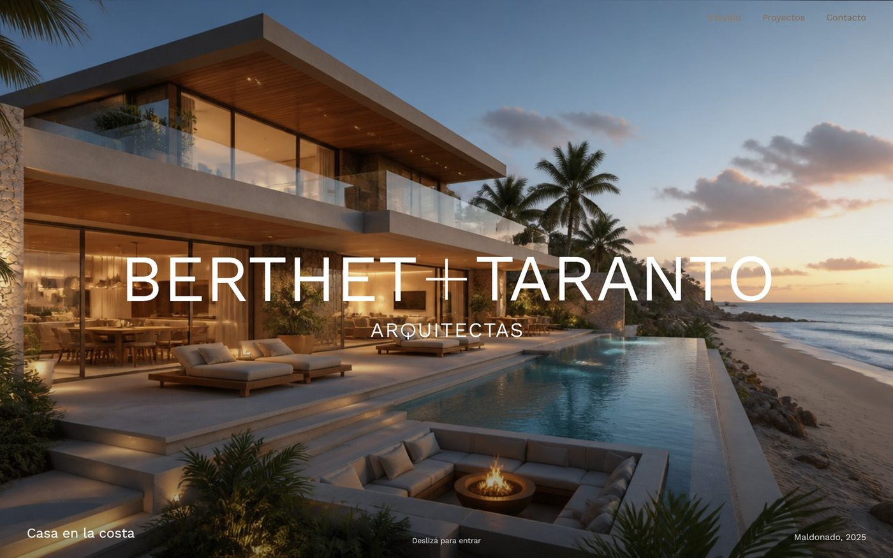
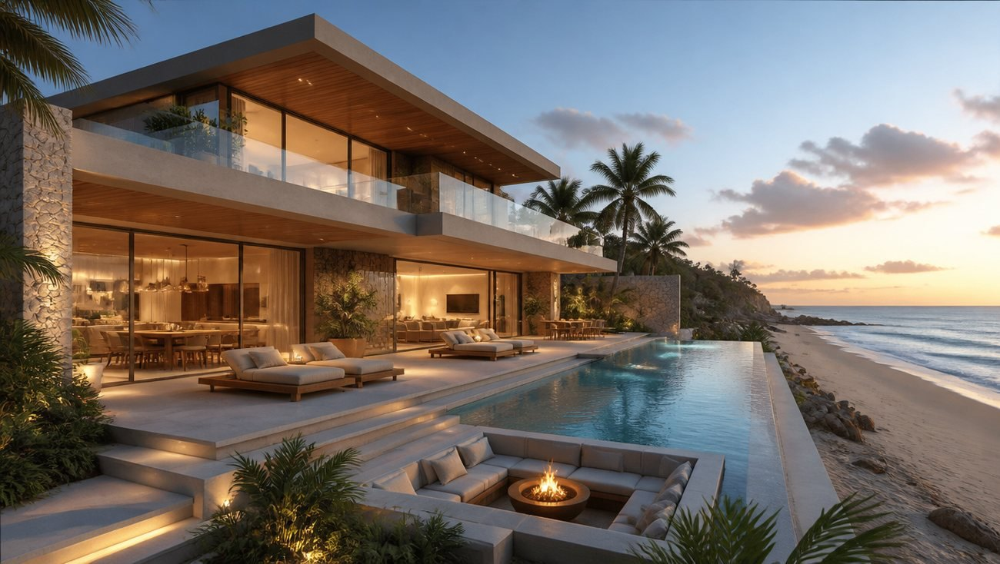
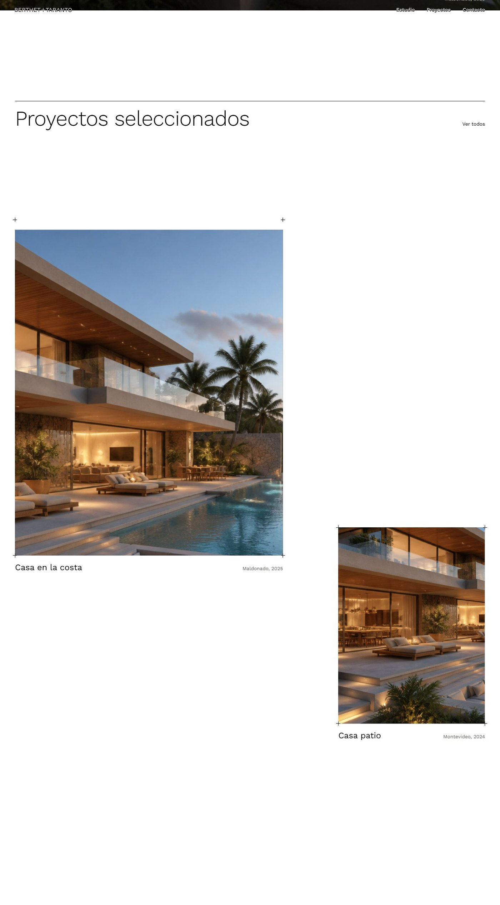
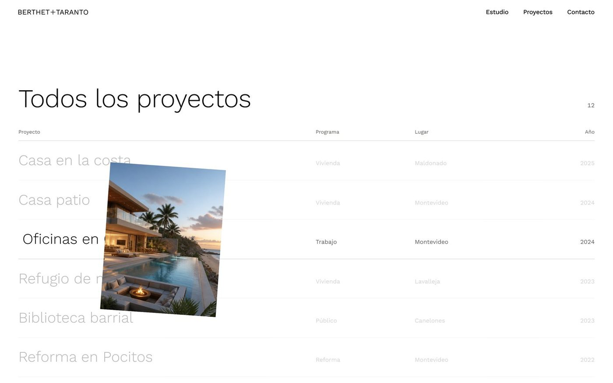
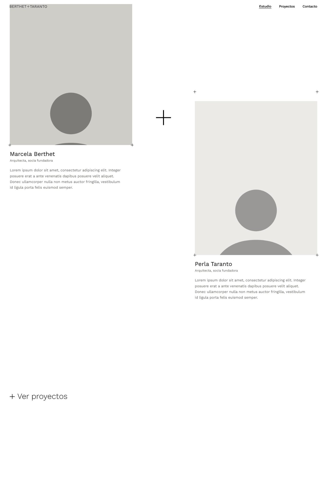
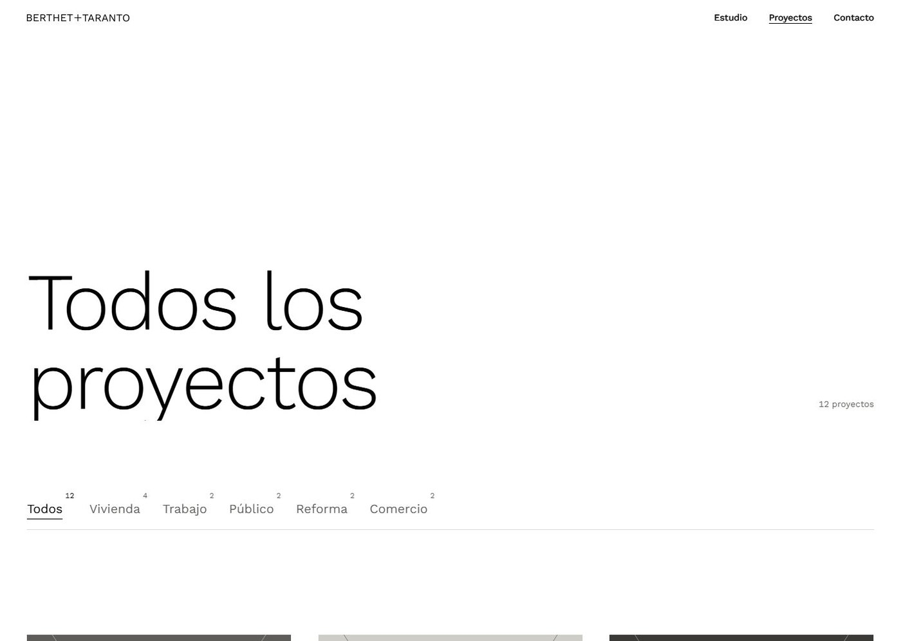
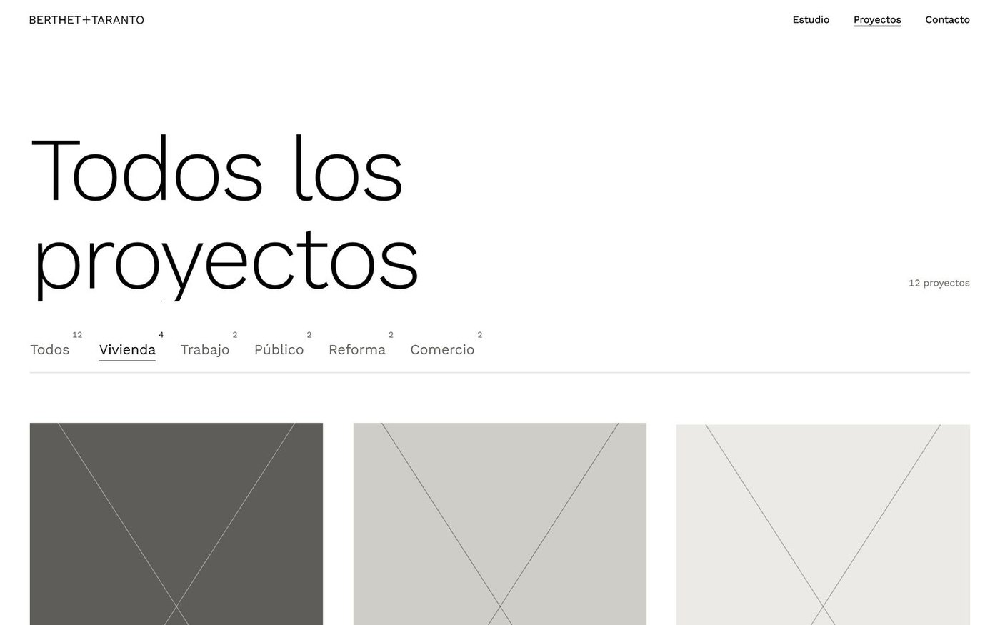
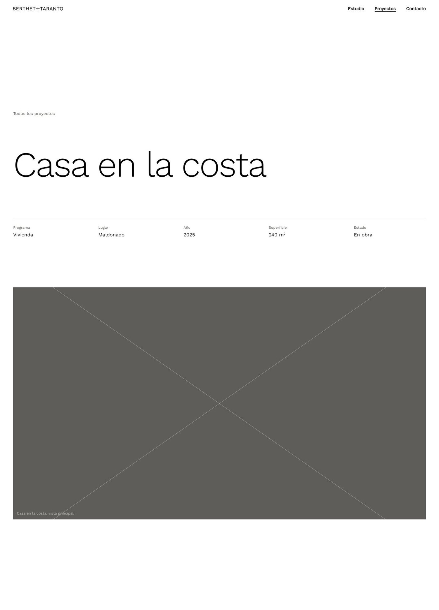
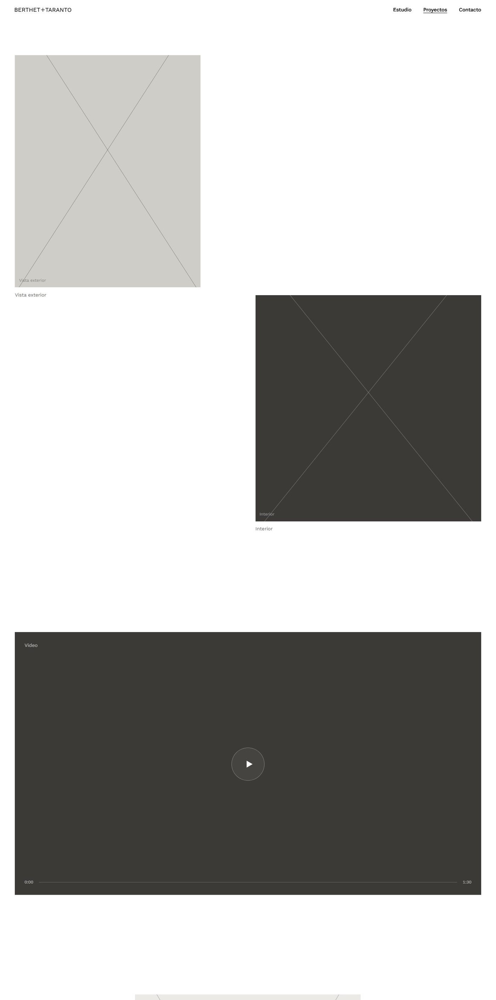

Por qué cada página está armada como está: el orden de los bloques, las piezas que la componen, lo que se dejó afuera y qué se puede cambiar sin romper el sistema.
bt-arq-prev.vercel.appVersión de preview · Septiembre 2026
ÍndiceBerthet + Taranto · Decisiones de diseño
Decisiones de diseño · bt-arq-prev.vercel.app2
Qué hay en este documento
Qué hay en este documento
Dos lectores: quien decide cómo se ve el sitio y quien lo programa.
A · El sistema
01Las páginas del sitio y la tipografía3
02Color: por qué la web es blanco y negro4
03Grilla y márgenes5
04Movimiento: qué se anima y qué no6
05El «+» de la marca como sistema7
B · Página por página
06Home — estructura y orden de los bloques8
07Home — la apertura9
08Home — proyectos e índice10
09Home — cierre de contacto11
10Estudio y socias12
11Todos los proyectos y filtros13
12Detalle de proyecto — anatomía14
13Detalle — imágenes y casos especiales15
14Contacto16
15Celular: qué cambia17
C · Criterio y pendientes
16Lo que se dejó afuera, y por qué18
17Accesibilidad, SEO y próximos pasos19
A · 01–02 El sistemaBerthet + Taranto
Decisiones de diseño · bt-arq-prev.vercel.app3
Punto de partida
Las páginas del sitio
Cada página responde a una sola pregunta del visitante. El resto del documento explica cómo.
Home /
Presentación de la marca, proyectos destacados, índice de proyectos y cierre de contacto.
Estudio /estudio
Quiénes son, enfoque y las dos socias.
Proyectos /todos-los-proyectos
Grilla completa con filtro por programa.
Detalle /proyectos/[slug]
Una página por proyecto, generadas en el build.
Contacto /contacto
Una sola pantalla, sin scroll, con el mail gigante.
En construcción /en-construccion
Página puente para publicar antes de que el sitio esté terminado.
02 · Tipografía
Una sola familia, escala fluida
La web usa ABC Areal y nada más: en tamaños grandes se parece a la rotulación de un plano, que es el registro que buscábamos.
El peso y para qué
Regular 400
Todos los títulos, el texto corrido, los datos y la navegación. Es el peso del sitio.
Medium 500
Se usa con cuentagotas, para un dato o un enlace puntual.
Bold 700
Disponible en la familia, pero fuera del sistema: no se usa.
No hay negritas en el contenido: si algo tiene que pesar más, crece de tamaño.
01
Números de etapa
Casa en la costa
Título de proyecto
Vivienda · Maldonado · 2025
Ficha: lugar, año, programa
A · 03 ColorBerthet + Taranto
Decisiones de diseño · bt-arq-prev.vercel.app4
Sistema
Blanco, negro y grises de obra
No hay color de marca, y es a propósito: en un portfolio de arquitectura cualquier color corporativo pelea con las fotos, que ya traen el suyo —madera, hormigón, cielo, vegetación—. El sitio pone el marco; la obra pone el color.
#ffffff · paper
#ebeae6 · fog
#cfcdc7 · concrete
#5e5d59 · graphite
#3b3a37 · shadow
#000000 · ink
El negro es un lugar, no un acento
El negro aparece en bloques completos —el pie de página y la página de contacto—, nunca en un botón suelto. Funciona como el cambio de sala en una muestra: se termina el recorrido blanco y se entra a otra cosa.
Gris para el dato, negro para el nombre
Lo que nombra va en negro (título del proyecto, nombre de la socia); lo que informa va en graphite y un punto más chico (lugar, año, programa, superficie). Eso permite escanear una lista sin leerla entera.
Sobre el «modo oscuro»
No hay modo oscuro conmutable y no hace falta: la web ya alterna blanco y negro por diseño. Un modo oscuro automático obligaría a inventar una segunda versión y rompería la intención de las secciones negras, que es que se sientan distintas del resto.
La única excepción de color del proyecto
Es este documento. El capítulo del «+» usa un ocre cálido para señalar dónde aparece el signo en cada pieza. Es una herramienta de lectura del PDF, no un color que haya que llevar a la web.
A · 04 GrillaBerthet + Taranto
Decisiones de diseño · bt-arq-prev.vercel.app5
Sistema
Doce columnas, un solo margen, mucho aire
El margen
Una sola medida horizontal gobierna el sitio. Sirve de margen lateral, de separación entre columnas y de referencia. Cambiar ese valor reencuadra la web entera de forma coherente.
Por qué 12 columnas y por qué casi nunca se usan las 12
Las secciones editoriales (home, estudio, detalle) se apoyan en una grilla de 12 columnas, pero los bloques ocupan anchos distintos y arrancan en columnas distintas. Esa asimetría es la que produce la sensación de «maqueta de revista» en vez de «plantilla»: ningún bloque queda alineado con el anterior salvo cuando queremos que descanse.
123456789101112
Bloques de anchos distintos que arrancan en lugares distintos y a distinta altura: la grilla existe, pero no se ve.
A · 05 MovimientoBerthet + Taranto
Decisiones de diseño · bt-arq-prev.vercel.app6
Sistema
El movimiento explica el recorrido; no es un adorno
Todas las animaciones están centralizadas en un solo archivo y se activan desde un único componente. No hay animaciones sueltas repartidas por las páginas: eso mantiene el vocabulario corto y hace que agregar una página nueva no implique volver a decidir cómo se mueve todo.
Revelado de imagen
Cada foto se descubre de abajo hacia arriba mientras su contenido interno vuelve de una escala mayor a su tamaño natural. Empieza apenas el marco asoma por el borde inferior, para que no se pierda si se scrollea rápido.
Texto que sube
Los títulos de página se parten en líneas y suben una por una detrás de una máscara. Los pies de foto hacen lo mismo, un instante después de que la imagen se abrió.
Frases que se encienden
Las frases grandes aparecen atenuadas y se «prenden» palabra por palabra al ritmo del scroll. Es la única animación atada directamente a la rueda: obliga a leerla despacio.
Parallax
Las imágenes marcadas como tales se desplazan a distinta velocidad que la página. Da profundidad sin mover el texto, que siempre viaja a velocidad normal.
Trazado de líneas
Las líneas de la cruz del pie y los «+» grandes se dibujan: primero el trazo horizontal, después el vertical, como quien traza a mano.
Reordenado con Flip
Al filtrar proyectos, las tarjetas viajan de su posición vieja a la nueva en vez de saltar.
Scroll suave, con freno
El sitio usa ScrollSmoother. Además hay un limitador propio: por más fuerte que se tire de la rueda, la página no avanza a destiempo ni se adelanta más de lo debido. Sin eso, un golpe de trackpad saltea secciones y sus animaciones nunca se ven. Si se cambia de dirección, el freno se descarta y el giro es inmediato. Teclado, barra de scroll y gestos táctiles quedan nativos, sin interferencia.
La intro se ve una vez
La animación de apertura de la home corre una sola vez por visita. Si se vuelve a Inicio desde otra página, el hero ya aparece armado: la segunda vez la animación sería una demora, no un gesto.
A · 06 La marcaEl «+» como sistema
Decisiones de diseño · bt-arq-prev.vercel.app7
Capítulo destacado
El «+» del logo no es un adorno: es la pieza que cose el sitio
La marca es Berthet + Taranto. Ese signo —dos trazos que se cruzan— es lo único gráfico del estudio además de su nombre. En vez de dejarlo quieto en el header, se lo repartió por todo el sitio. Le da protagonismo sin agrandarlo y sin inventar un color corporativo.
01
Une los dos apellidos
En el logo del header y en el hero, separa y a la vez suma a las dos socias. Es el uso literal y el origen de todos los demás.
02
Abre el sitio
La animación de entrada arranca con una cruz que ocupa toda la pantalla y se repliega hasta ser el «+» del logo.
03
Es el botón de menú
En celular, el «+» del header gira hasta convertirse en una «×» para cerrar. Un solo signo abre y cierra.
04
Marca las esquinas de las fotos
Cuatro «+» finos en las esquinas de algunas imágenes, como las marcas de corte de una impresión o los ejes de un plano.
05
Encabeza cada acción
«+ Ver más», «+ Ir a contacto». Reemplaza a la flecha típica: en vez de «ir hacia», propone «sumar». Al pasar el cursor gira un cuarto de vuelta.
06
Separa a las socias
En Estudio, un «+» grande y de trazo fino se ubica entre los dos retratos. Es el logo convertido en composición de página.
07
Estructura el cierre
El pie negro y la página de contacto están divididos por una cruz del tamaño de la pantalla. El mail, la dirección y los datos se acomodan en los cuadrantes que arma esa cruz.
Reglas de uso del signo
Siempre del color del texto. Hereda el color de su contexto: negro sobre blanco, blanco sobre negro. Nunca lleva color propio.
Nunca dos juntos compitiendo. En una misma pantalla hay como mucho un «+» protagonista; los demás son de esquina o de enlace, a escala chica.
Trazo fino a escala grande. El «+» grande usa un trazo proporcionalmente más delgado que el del logo para mantener su elegancia.
No se inclina ni se deforma. La única rotación permitida es la del menú y el cuarto de vuelta de los enlaces al pasar el cursor.
No es un ícono de «agregar». Nunca aparece en un control que sume o expanda algo, para que no se confunda con un botón de sistema.
No va dentro de la foto. Siempre está en el papel: en el margen, en la esquina, en el texto. La imagen queda limpia.
B · 07 HomeEstructura
Decisiones de diseño · bt-arq-prev.vercel.app8
Página por página
Home: los bloques, en este orden y no en otro
El orden va de lo emocional a lo operativo. Quien entra por primera vez mira; quien vuelve buscando un proyecto concreto baja hasta la lista, que es más rápida de escanear que una grilla de fotos.
1 · Hero
Pantalla completa. Marca + una obra. Responde «quiénes son» en dos segundos.
2 · Proyectos seleccionados
Obras en composición asimétrica. Responde «qué hacen» con evidencia, no con adjetivos.
3 · Todos los proyectos (índice)
Una lista de texto. Responde «cuánto hay» y da acceso rápido a quien busca algo puntual.
4 · Contacto
Pantalla negra con el mail gigante. Responde «cómo sigo».
Por qué imágenes antes que lista
Son las dos formas de mirar el mismo material, una después de la otra.
Por qué no hay un «sobre nosotras» en la home
El texto institucional vive en Estudio. En la home ocuparía la posición más valiosa de la página para decir algo que nadie lee al llegar. La obra presenta mejor al estudio que un párrafo.
Por qué el enlace «Ver todos» está arriba y abajo
Arriba, junto al título de la sección, es un ancla interna que lleva al índice de la misma página. Abajo, después del índice, el «+ Ver más» sale a la página completa. Son dos intenciones distintas: «mostrame la lista» y «quiero verlos todos».
Lo que la home no tiene
Slider o carrusel de portada
Barra de novedades o banner
Sección de servicios con iconos
Logos de clientes o premios
Formulario de suscripción

Hero terminado. El logo se dibuja dos veces: en negro sobre el fondo blanco y en blanco dentro de la foto, recortado junto con ella. Mientras la imagen se abre, las letras cambian de color exactamente en el borde de la foto.
B · 08 HomeLa apertura
Decisiones de diseño · bt-arq-prev.vercel.app9
Secuencia de apertura
La web se presenta dibujando su propio logo
La intro no es una pantalla de carga con un logo quieto: es la construcción del logo, y termina convirtiéndose en la primera obra. Mientras corre, el scroll está bloqueado; se libera cuando la foto ya casi terminó de abrirse, para que nadie se pierda el final ni quede atrapado esperando.
01
Una cruz cruza toda la pantalla. Primero el trazo horizontal, después el vertical.
+
02
Los trazos se repliegan hasta quedar del tamaño del «+» del logo, en el centro exacto.
BERTHET + TARANTO
03
Los dos apellidos entran desde afuera hacia el «+», uno desde cada lado.
ARQUITECTAS
04
«ARQUITECTAS» sube letra por letra desde abajo; en paralelo aparece el menú.

05
La foto se abre desde el centro del «+» hasta llenar la pantalla, con un leve zoom out.
Decisiones dentro de la secuencia
La foto crece desde el centro, no desde el borde ni con un fundido. La obra sale de la marca: esa es la idea de la escena.
Las letras entran, no aparecen. Se deslizan detrás de una máscara, como si la palabra ya existiera fuera de cuadro.
El menú llega un instante después de los nombres. Primero la marca, después la navegación.
El logo del header espera a que el hero salga casi por completo: mientras el logo grande se ve, uno chico arriba sobra.
Y al hacer scroll
El hero no queda fijo. Se va con la página mientras el logo sube y se desvanece. Es la decisión opuesta a la típica sección fija con la foto detrás: acá, salir de la portada tiene que sentirse como pasar de página, no como levantar una cortina.
La leyenda «Deslizá para entrar» se va apenas empieza el scroll y vuelve si se sube de nuevo.
B · 09–10 HomeProyectos e índice
Decisiones de diseño · bt-arq-prev.vercel.app10
Proyectos seleccionados y el índice
Dos maneras de mostrar obra: la composición asimétrica que se mira, y la lista de texto que se escanea.
Proyectos seleccionados
La sección abre con una línea negra al ancho completo y el título contra ella. Es la convención de una hoja de proyecto: primero la regla, después el contenido.
Por qué proporciones distintas
Si todas las fotos tuvieran el mismo formato, la página sería una grilla y la lectura se volvería mecánica. Al alternar vertical y apaisada, cada obra reclama su propio encuadre y el scroll cambia de velocidad percibida.
El dato, siempre igual
Debajo de cada foto: nombre a la izquierda (negro), lugar y año a la derecha (gris). Sin descripción, sin botón «ver proyecto». La foto entera es el enlace y el nombre se subraya solo al pasar el cursor.

Las primeras piezas, desfasadas a distinta altura. Se ven las marcas «+» en las esquinas, que aparecen girando después de que la imagen se revela.
El índice: una lista que se mira, no solo se lee
Con el cursor sobre una fila, las demás bajan de opacidad, el nombre activo se corre y una ventana con la foto del proyecto sigue al cursor, inclinándose levemente según la velocidad del movimiento.
Por qué una muestra y no el catálogo
El índice de la home es una muestra, no el catálogo: deja la sensación de que hay más y es la razón para hacer clic en «+ Ver más».
Por qué una tabla y no tarjetas
Cuatro columnas —proyecto, programa, lugar, año— con encabezado chico en gris. Para quien busca «la obra de Rocha» o «algo de 2023», una tabla es más rápida que las imágenes. Y visualmente descansa: después de las fotos grandes, texto.
La vista previa que sigue al cursor
Es el reemplazo de la miniatura: en vez de meter una foto chica en cada fila —que ensuciaría la tabla—, la imagen aparece solo cuando el cursor está en el índice. Se activa únicamente en dispositivos con cursor real; en celular y tablet no existe, porque no hay hover.

Índice con el cursor sobre una fila: las demás bajan de opacidad y una ventana con la foto del proyecto sigue al cursor.
B · 11 HomeCierre
Decisiones de diseño · bt-arq-prev.vercel.app11
El pie es una pantalla entera, negra, con el mail como protagonista
Ocupa el alto completo de la pantalla. Las dos líneas —una horizontal y una vertical— se trazan a medida que la sección entra, y forman el «+» de la marca a escala de página.
Por qué no es un pie clásico
Un pie convencional —columnas de enlaces, redes, aviso legal— sería el único lugar del sitio con densidad de información chica y apretada. Acá el cierre repite la lógica del resto: una idea grande por pantalla. La idea es el mail.
El mail es el botón
No hay un botón «Escribinos»: el propio mail, escrito enorme, es el enlace mailto:. Al pasar el cursor, las letras giran hacia arriba y son reemplazadas por una copia idéntica: un gesto mínimo que confirma que eso se puede tocar sin agregar ningún elemento nuevo.
Qué contiene, en orden
1. «Contacto» (etiqueta chica) y la frase Contanos qué querés construir. 2. Enlace «+ Ir a contacto», arriba a la derecha. 3. El mail, en el tamaño máximo que permite la línea vertical. 4. Ciudad, Instagram y copyright, en una línea fina abajo.
Cierre de contacto: las dos líneas se trazan a medida que la sección entra y forman el «+» de la marca a escala de página.
Se repite en todas las páginas
El mismo bloque cierra la home, Estudio, Proyectos y cada detalle. Es el único componente que se repite entero: da la sensación de que todas las páginas terminan en el mismo lugar. La página de Contacto es la excepción: no lleva el pie porque ella misma es ese cierre.
B · 12 EstudioEstructura
Decisiones de diseño · bt-arq-prev.vercel.app12
Estudio: el texto institucional, dosificado
El título ocupa casi todo el ancho y el párrafo de presentación va abajo a la derecha. Esa asimetría evita el bloque «título centrado + bajada centrada» de las páginas institucionales.
1 · Título y una frase
Qué es el estudio y dónde trabaja. Dos líneas, no un párrafo.
2 · Imagen apaisada
Corta el texto enseguida: antes de explicarse, muestra obra.
3 · Enfoque
Etiqueta a la izquierda y una frase grande a la derecha, que se enciende palabra por palabra. Debajo, dos columnas de texto corrido.
4 · Socias
Dos retratos desfasados con el «+» en el medio.
5 · «+ Ver proyectos»
Salida hacia la obra. La página institucional termina devolviendo a lo importante.
6 · Cierre de contacto
El mismo bloque negro de siempre.
La frase grande hace el trabajo del texto largo
La frase de enfoque, a tamaño de título y encendiéndose con el scroll, transmite la idea; el texto largo queda abajo, en gris y en dos columnas, para quien efectivamente quiere leer.
Por qué la etiqueta «Enfoque» a la izquierda
Es el recurso de índice de catálogo: una columna angosta con el rótulo y una ancha con el contenido. Permite saber de qué habla la sección sin usar un título grande, que competiría con la frase.
Las socias: dos retratos que no están a la misma altura
Por qué desfasados
Dos retratos idénticos y alineados dan una foto de directorio. Al bajar el segundo, la composición se vuelve dinámica y el «+» del medio queda descentrado respecto de las fotos, lo que obliga a leerlo como parte de la página y no como un separador decorativo.
La posición del «+» está calculada, no estimada
El margen superior del signo se calcula en CSS a partir del ancho real de la columna, de modo que queda a la altura media entre ambos retratos en cualquier ancho de pantalla, sin valores fijos que se rompan al cambiar de monitor.
En celular
Las dos fichas se apilan y el «+» del medio desaparece: entre dos retratos apilados no separa nada, y el signo ya está presente en el logo del header.

Retratos en composición desfasada, con el «+» exactamente a la mitad de la diferencia de altura. Se ven también las marcas de esquina de cada retrato.
B · 13 ProyectosGrilla y filtros
Decisiones de diseño · bt-arq-prev.vercel.app13
Todos los proyectos: acá sí, grilla pareja
Título grande, contador a la derecha, barra de filtros con la cantidad de obras de cada programa en superíndice y una grilla con todas las fichas en el mismo formato.
Por qué el formato uniforme
Es la decisión opuesta a la de la home, y a propósito. Acá el visitante viene a comparar y explorar: si cada ficha tuviera una proporción distinta, el ojo compararía encuadres en vez de obras. Todas con el mismo formato y el mismo pie de datos.
El contador en superíndice
Cada filtro muestra cuántas obras tiene antes de tocarlo. Evita el clic vacío y, de paso, comunica el perfil del estudio: se ve de un vistazo en qué programas está el fuerte.
Por qué no más columnas
Cada columna de más achica la ficha hasta que la foto deja de leerse en un notebook. La grilla de proyectos mantiene el ancho que conserva presencia.

Grilla pareja, con todas las fichas en el mismo formato.
Filtrar sin recargar y sin que la página salte
El filtro seleccionado queda en negro y subrayado; los demás, en gris. La grilla se reordena con una animación en la que cada tarjeta viaja de su posición anterior a la nueva.
Por qué animar el reordenamiento
Cuando una grilla filtra de golpe, se pierde la referencia: no se sabe si las tarjetas que quedaron son las mismas. Al hacerlas viajar a su nueva posición, el cambio se entiende como un reacomodo, no como una página nueva.
Dos detalles que evitan saltos
La grilla congela su altura mientras las tarjetas se mueven, así el cierre de contacto no salta hacia arriba a mitad de la animación.
Al terminar, se recalculan las posiciones de scroll, para que las animaciones de las tarjetas que ahora están más arriba sigan funcionando.

Filtro activo: el seleccionado queda en negro y subrayado, y la grilla se reordena con las tarjetas viajando a su nueva posición.
B · 14 DetalleAnatomía
Decisiones de diseño · bt-arq-prev.vercel.app14
La página de un proyecto, bloque por bloque
1 · Volver — Enlace chico «Todos los proyectos», arriba de todo.
2 · Nombre — Título gigante, que sube línea por línea.
3 · Ficha — Los datos del proyecto en una línea: programa, lugar, año, superficie, estado.
4 · Portada — Imagen apaisada al ancho completo.
5 · Idea — Una frase grande que se enciende + dos párrafos en gris.
6 · Antes(solo reformas) — Tira horizontal de ambientes.
7 · Galería — Fotos en composición asimétrica, con el video intercalado si el proyecto lo tiene.
8 · Siguiente — «+ Nombre del próximo proyecto» con su miniatura.
9 · Contacto — El cierre negro de siempre.

Bloques 1 a 4. El título respira solo, la ficha va debajo de una línea fina y recién después llega la portada.
Por qué la ficha va arriba y no al costado
Programa, lugar, año, superficie y estado son datos que se consultan una vez y no se vuelven a mirar. Puestos como barra horizontal debajo del título se leen de un golpe y liberan todo el ancho para las imágenes. Una columna lateral con datos habría reducido las fotos durante toda la página.
Por qué la portada no tiene pie de foto
Es la imagen que representa al proyecto entero; rotularla sería repetir el título que está justo arriba. Las de la galería sí llevan pie («Vista exterior», «Interior», «Detalle constructivo») porque ahí el rótulo agrega información.
El recorrido
Título + ficha
Portada
Idea + texto
Galería
Siguiente
Contacto
La mitad del recorrido es obra; el texto ocupa una parte menor.
B · 15 DetalleImágenes y casos especiales
Decisiones de diseño · bt-arq-prev.vercel.app15
Las imágenes de la galería y los casos especiales
Una portada y una serie corta de fotos
El detalle tiene una portada y una serie corta de fotos de galería. No es un límite técnico: es el guion mínimo con el que se entiende una obra.
Portada
La obra en su contexto. Es la que se recuerda.
Vista exterior
El volumen completo.
Interior
Cómo se vive adentro.
Detalle constructivo
El oficio.
Vista general
El cierre, al ancho completo.
En las reformas los rótulos cambian a «Después, living / cocina / fachada», y se suman imágenes del «antes».
Las razones
Es la secuencia clásica de una publicación de arquitectura: contexto, volumen, interior, detalle, síntesis. Unas pocas piezas cuentan una obra; demasiadas la repiten.
Las proporciones no se repiten. Formatos distintos permiten posiciones distintas en la grilla; con más fotos habría que repetir encuadre y la página se volvería una lista.
Dura lo que dura la atención. La galería es la mayor parte del recorrido del detalle.
Es un pedido realista de material: una serie corta de fotos buenas por obra es algo que un estudio puede sostener en todo su portfolio.
Siguiente proyecto: el final es un principio
La página no termina en el contacto: antes ofrece la obra siguiente, con su nombre gigante precedido del «+» y una miniatura. El recorrido puede seguir sin volver al índice.
Por qué no «anterior y siguiente»
Dos flechas obligan a elegir dirección y parten la atención. Una sola propuesta, grande y con nombre, es una invitación; dos son un panel de control.

Galería, primer tramo: las primeras fotos en columnas distintas y el video, cuando existe, al ancho completo.
Cómo pasar a más fotos
Una serie corta por obra. Si un proyecto merece más material, conviene una segunda sección con criterio propio («Proceso de obra», «Planos») antes que estirar la galería.
Dos reglas al agregar posiciones
Alternar vertical y apaisada, y no repetir dos veces seguidas la misma columna de arranque.
Dejar una sola imagen al ancho completo cada tanto: es el descanso de la secuencia.
Reformas: el «antes» en horizontal
«Antes de la reforma» es una sección fijada. En escritorio se clava en pantalla y los ambientes pasan de derecha a izquierda mientras se scrollea; la línea superior marca el avance. En celular se apila en vertical. Aplica solo a los proyectos de programa Reforma.
Video: solo donde suma
Los proyectos que tienen video lo muestran al ancho completo, entre la segunda y la tercera foto. Está en el medio a propósito: como recompensa a mitad de recorrido, no como portada —un video arriba compite con la foto principal—.
B · 16 ContactoUna sola pantalla
Decisiones de diseño · bt-arq-prev.vercel.app16
Contacto: todo entra en una pantalla, sin scroll
Foto de fondo atenuada y algo desaturada, la cruz de la marca dividiendo la pantalla, el mail contra la línea vertical y la card de ubicación en el cuadrante derecho.
Por qué sin scroll
Es la única página del sitio donde el visitante ya decidió: viene a buscar un dato. Hacer scroll para encontrar un mail es fricción pura. Toda la información —mail, ciudad, dirección, Instagram— entra en una pantalla, y el scroll suave se desactiva acá porque no hay nada que recorrer.
Los cuadrantes
Arriba izquierda: el pedido («Contanos qué querés construir») y una línea de instrucción.
Abajo izquierda: el mail, en el tamaño más grande que permite la línea.
Abajo derecha: la card de ubicación.
Al pie: ciudad, Instagram y copyright.
La foto de fondo, tratada
Una foto de obra atenuada, algo más oscura y desaturada, más un degradado que se cierra abajo. No se busca una foto bonita: se busca que el texto blanco tenga contraste suficiente y que la obra siga presente, en segundo plano.
La cruz, otra vez
La vertical se traza al cargar, igual que en el pie. Es lo que hace que la página de contacto se lea como la versión a pantalla completa del cierre que ya se vio en todas las demás páginas.
Foto de fondo atenuada, la cruz dividiendo la pantalla, el mail contra la línea vertical y la card de ubicación en el cuadrante derecho.
Dos ausencias deliberadas: el formulario y el mapa
Por qué no hay formulario
Un formulario parece más profesional y en la práctica rinde menos: esconde el mail, se llena de spam y pierde el hilo —un mail queda en la casilla, con historial; un envío de formulario llega como notificación suelta—.
Si más adelante se quiere un formulario, se puede sumar con un servicio externo sin tocar el resto del sitio. La decisión es empezar por lo simple, no cerrar la puerta.
Por qué no hay mapa embebido
Un iframe de Google Maps trae scripts de terceros, cookies y un bloque visual que no se parece a nada del sitio. La card lo reemplaza con una foto del lugar, la dirección en texto y un enlace «+ Ver en el mapa» que abre la app de mapas en otra pestaña.
Detalle de la card
Es un vidrio oscuro sobre la foto, con un borde fino y una sombra larga. Es el único elemento del sitio con efecto de material: se justifica porque tiene que flotar sobre una foto sin taparla del todo.
B · 17 CelularQué cambia
Decisiones de diseño · bt-arq-prev.vercel.app17
En celular no es «la misma web más angosta»
Home
El logo se achica con el ancho pero mantiene la proporción; la foto sigue ocupando la pantalla completa.
Menú
Panel negro que baja con una máscara; los enlaces suben escalonados. Los enlaces de escritorio se reemplazan por «Menú +». El panel agrega «Inicio» y repite mail y ciudad al pie.
Proyectos
Una columna, mismo formato de ficha, mismos filtros arriba.
Composiciones asimétricas
Se apilan en una columna. Los desfasajes verticales se desactivan: en una columna angosta no aportan y solo agregarían huecos.
Secciones horizontales
«Cómo trabajamos» y «Antes de la reforma» dejan de fijarse y pasan a leerse en vertical. El desplazamiento horizontal atado al scroll no funciona bien con gestos táctiles.
Vista previa del índice
No existe: depende de un cursor.
Áreas seguras
Todos los bordes contemplan las zonas de la barra del sistema y del notch.
Alturas
Se usa svh en vez de vh, para que las barras del navegador que aparecen y desaparecen no corten el contenido.
Un solo quiebre importante
El sitio tiene un único punto de cambio entre celular y escritorio: debajo, una columna; encima, la grilla de 12. Todo lo demás —tamaños de letra, márgenes, imágenes— es continuo gracias a clamp(). Menos quiebres significa menos combinaciones que probar y menos formas de romperse.
C · 16 CriterioLo que se dejó afuera
Decisiones de diseño · bt-arq-prev.vercel.app18
Lo que se dejó afuera, y por qué
Ninguna de estas ausencias es un olvido. Cada una se evaluó y se descartó por una razón concreta; varias se pueden sumar más adelante sin rehacer nada.
Formulario de contacto
Esconde el mail, atrae spam y suma un servicio que mantener. El mailto: gigante cumple la misma función con cero infraestructura.
Mapa embebido
Scripts de terceros, cookies y un bloque visual ajeno. Se reemplaza por foto + enlace al mapa.
Buscador
La grilla completa y el filtro por programa resuelven la búsqueda sin agregar un campo de texto.
Paginación
Todos los proyectos se muestran en una sola grilla; paginar agregaría clics para llegar al final.
Blog o novedades
Una sección que no se actualiza envejece el sitio entero. Instagram ya cumple ese rol y está enlazado.
Versión en inglés
Duplicaría todo el contenido y obligaría a mantener dos versiones de cada texto. Se puede agregar cuando exista público que lo justifique.
Modo oscuro conmutable
La web ya alterna blanco y negro por diseño; un segundo esquema competiría con esa intención.
Galería en ventana modal
Las fotos ya se ven grandes al hacer scroll. Un visor superpuesto agregaría un estado más, pelearía con el scroll suave y obligaría a un botón de cerrar.
Carrusel o slider
Esconde contenido detrás de flechas y obliga a decidir el orden por el visitante. Acá el orden lo da el scroll.
Pantalla de carga
La intro del hero cumple esa función y, además, cuenta algo.
Banner de cookies
El sitio no usa cookies ni analítica. Si se suma medición, conviene una herramienta sin cookies para no tener que pedir consentimiento.
Sección de servicios con iconos
«Anteproyecto, dirección de obra, permisos» ya se cuenta en «Cómo trabajamos», con nombre, explicación e imagen. Una grilla de iconos genéricos diría lo mismo con menos credibilidad.
Testimonios de clientes
En arquitectura la prueba es la obra construida. Un testimonio no verificable resta seriedad.
Equipo ampliado
Por ahora aparecen las dos socias. Sumar colaboradores es agregar entradas a la misma grilla cuando haga falta.
Planos o PDF descargables
Decisión a tomar con el estudio: implica publicar documentación técnica. El lugar natural sería una fila más en la ficha del proyecto.
Precios o presupuestos
No corresponde al medio: cada obra se cotiza después de la primera charla, que es a lo que invita el sitio.
Redes además de Instagram
Es la única que el estudio sostiene. Enlazar perfiles vacíos es peor que no enlazar.
Newsletter
Necesita alguien que escriba con frecuencia y una herramienta de envío. No hay ni una cosa ni la otra.
Chat o WhatsApp flotante
Una burbuja fija tapa las fotos en celular. Si se quiere WhatsApp, el lugar es la página de contacto, al lado del mail.
Hover sobre las fotos
El revelado y el parallax ya dan movimiento. Un zoom adicional al pasar el cursor volvería la página inquieta.
Lo que sí conviene agregar
Una analítica sin cookies para saber qué proyectos se miran y hasta dónde llega la gente. Recién con datos conviene discutir el orden de los destacados o el tamaño de la galería.
Nada de lo que está afuera quedó bloqueado. El sitio está armado en piezas independientes: sumar una sección nueva, un idioma o un formulario es agregar, no rehacer. La lista existe para que la decisión se tome a conciencia y no por costumbre: «toda web tiene esto» no es una razón.
C · 17 CierreAccesibilidad y SEO
Decisiones de diseño · bt-arq-prev.vercel.app19
Decisiones que no se ven, pero sostienen todo
Accesibilidad
Menú accesible
Botón con estado abierto/cerrado anunciado, cierre con Escape y enlaces fuera del foco mientras el panel está cerrado.
Foco visible
Contorno visible en todo el sitio. Se puede recorrer la web entera con el teclado.
Enlaces externos
Instagram y el mapa avisan «(se abre en otra pestaña)» para lectores de pantalla.
Movimiento reducido
Con la preferencia del sistema activada no corre ninguna animación y todo el contenido queda visible.
Sin JavaScript
Una regla en el layout garantiza que el contenido se vea igual: la web sigue siendo legible.
SEO
Cada página declara su propio título y descripción, con el patrón «Nombre de la página | BT Arquitectas». Las páginas de proyecto se generan en el build con título y descripción propios (programa, lugar y año), y solo existen las de la lista: cualquier otra dirección devuelve «no encontrada» en vez de una página vacía.
El sitio está listo para recibir el material real; hasta entonces, cada decisión se puede discutir sin costo
Documento generado sobre la versión de preview publicada en bt-arq-prev.vercel.app. Las capturas corresponden a esa versión; los textos e imágenes que se ven en ellas son provisorios.